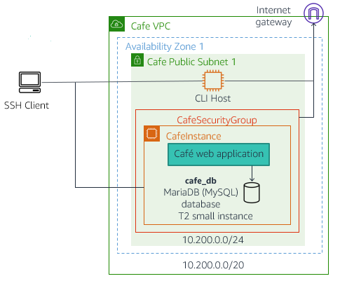
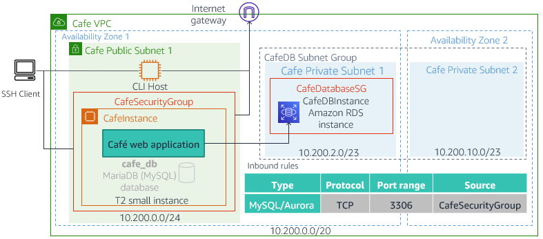

Activity - Migrate to Amazon RDS
Activity overview
In this activity, you will migrate the Café web application to use a fully managed Amazon Relational Database Service (Amazon RDS) instance instead of a local database instance.
This diagram illustrates the topology of the Café web application runtime environment before the migration. The application database runs in an Amazon Elastic Compute Cloud (Amazon EC2) LAMP (Linux, Apache web server, MySQL and PHP) instance along with the application code. The instance has a type of t3 small and runs in a public subnet to allow internet clients to access the website. A CLI Host instance resides in the same subnet to enable the administration of the instance by using the AWS Command Line Interface (AWS CLI).
Before Database Migration topology diagram

The diagram below illustrates the topology of the Café web application runtime environment after the migration.
You will migrate the local Café database to an Amazon Relational Database Service (Amazon RDS) database that resides outside of the instance. The RDS database will be deployed in the same virtual private cloud (VPC) as the instance.
During the migration process, you will build the components illustrated in this diagram, including two private subnets in different Availability Zones, a security group for the database instance, and the RDS database instance itself. After the database has been migrated, you will reconfigure the Café application to use the RDS instance database instead of the local database.
After Database Migration topology diagram

Activity objectives
After completing this activity, you will be able to:
- Create an Amazon RDS MariaDB instance using the AWS CLI.
- Migrate data from a local MariaDB database to an Amazon RDS MariaDB database.
- Monitor an Amazon RDS instance using Amazon CloudWatch metrics.
Business case relevance
A new business requirement for Café—Automate database maintenance tasks and reduce database administration costs
The administration of the Café database is becoming a burden to Sofîa and Nikhil. For example, doing weekly database backups requires them to work extra hours on weekends because they must manually submit the backup job. They must also verify it successfully runs during the hours when the business is closed.
In addition, they recently struggled with installing a required patch, and they were barely able to complete it during the weekend after hours window. Martha and Frank are also realizing that these maintenance tasks are increasing the business' labor costs because they must pay for the overtime hours that Sofîa and Nikhil must work. Therefore, they contacted AWS team to solicit some recommendations.
Olivia, the AWS solutions architect, analyzed the request from Martha and Frank and suggested that they migrate the database to Amazon RDS. This solution eliminates the burden of manually performing common database maintenance tasks, such as backups, patch installation, and upgrades. As a fully managed service, Amazon RDS performs these tasks automatically.
In this activity, you will take on the roles of Nikhil and Sofîa, and work on migrating the Café database to Amazon RDS.
Activity steps
Duration: This activity requires approximately 75 minutes to complete.
Accessing the AWS Management Console
At the top of these instructions, click Start Lab to launch your lab.
A Start Lab panel opens displaying the lab status.
Wait until you see the message "Lab status: ready", then click the X to close the Start Lab panel.
At the top of these instructions, click AWS
This will open the AWS Management Console in a new browser tab. The system will automatically log you in.
Tip: If a new browser tab does not open, there will typically be a banner or icon at the top of your browser indicating that your browser is preventing the site from opening pop-up windows. Click on the banner or icon and choose "Allow pop ups."
Arrange the AWS Management Console tab so that it displays along side these instructions. Ideally, you will be able to see both browser tabs at the same time, to make it easier to follow the lab steps.
Leave this browser tab open. You will return to it later in this activity.
Task 1: Create an Amazon RDS instance by using the AWS CLI
In this task, you create an Amazon RDS instance by using the AWS CLI. You begin by opening a Secure Shell (SSH) session to the CLI Host instance that is running in your environment. This instance already has the AWS CLI installed. Using the SSH session, you then run AWS CLI commands to:
- Gather configuration information for the existing Café environment.
- Create two private subnets and a database subnet group. These components are required to build the Amazon RDS instance.
- Create the Amazon RDS MariaDB instance.
Task 1.1: Connect to the CLI Host instance by using SSH
If you are a Windows user, follow the steps described in Task 1.1.1. Otherwise, if you are a macOS or Linux user, follow the steps in Task 1.1.2.
macOS/Linux users—Click here for login instructions
Task 1.1.1: Windows SSH
These instructions are for Windows users only.
If you are using macOS or Linux, skip to the next section.
Read through the three bullet points in this step before you start to complete the actions, because you will not be able see these instructions when the Details panel is open.
- Click on the Details drop down menu above these instructions you are currently reading, and then click Show. A Credentials window will open.
- Click on the Download PPK button and save the labsuser.ppk file. Typically your browser will save it to the Downloads directory.
- Then exit the Details panel by clicking on the X.
Download needed software.
- You will use PuTTY to SSH to Amazon EC2 instances. If you do not have PuTTY installed on your computer, download it here.
Open putty.exe
Configure PuTTY to not timeout:
- Click Connection
- Set Seconds between keepalives to
30
This allows you to keep the PuTTY session open for a longer period of time.
Configure your PuTTY session:
- Click Session
- Host Name (or IP address): Copy and paste the IPv4 Public IP address for the CLI Host instance. To find it, return to the EC2 Console and click on Instances. Check the box next to the CLI Host instance you want to connect to and in the Description tab copy the IPv4 Public IP value.
- Back in PuTTy, in the Connection list, expand SSH
- Click Auth (don't expand it)
- Click Browse
- Browse to and select the lab#.ppk file that you downloaded
- Click Open to select it
- Click Open
Click Yes, to trust the host and connect to it.
When prompted login as, enter:
ec2-userThis will connect you to the EC2 instance.
Task 1.1.2: macOS/Linux SSH
These instructions are for Mac/Linux users only. If you are a Windows user, skip ahead to the next task.
Read through the three bullet points in this step before you start to complete the actions, because you will not be able see these instructions when the Details panel is open.
- Click on the Details drop down menu above these instructions you are currently reading, and then click Show. A Credentials window will open.
- Click on the Download PEM button and save the labsuser.pem file.
- Then exit the Details panel by clicking on the X.
Open a terminal window, and change directory
cdto the directory where the labsuser.pem file was downloaded.For example, run this command, if it was saved to your Downloads directory:
cd ~/DownloadsChange the permissions on the key to be read only, by running this command:
xxxxxxxxxxchmod 400 labsuser.pemReturn to the AWS Management Console, and in the EC2 service, click on Instances. Check the box next to the CLI Host instance you want to connect to.
In the Description tab, copy the IPv4 Public IP value.
Return to the terminal window and run this command (replace <public-ip> with the actual public IP address you copied):
xxxxxxxxxxssh -i labsuser.pem ec2-user@<public-ip>Type
yeswhen prompted to allow a first connection to this remote SSH server.Because you are using a key pair for authentication, you will not be prompted for a password.
Task 1.1.3: Configure the AWS CLI
Before you can run AWS CLI commands on the CLI Host instance, you must first configure the AWS CLI environment to define the AWS account credentials, Region name, and output format to use.
Update the AWS CLI software with the credentials.
xxxxxxxxxxaws configureAt the prompts, enter the following information:
- AWS Access Key ID: Click on the Details drop down menu above these instructions, and then click Show. Copy the AccessKey value and paste it into the terminal window.
- AWS Secret Access Key: Copy and paste the SecretKey value from the same Credentials screen.
- Default region name: Type in the name of the region where the Cafe web server instance was created for you. To determine this, return to the AWS Management Console and navigate to the EC2 service. By default, the UI will display the region where EC2 instances were created for you. For example,
us-east-1orus-west-2. - Default output format:
json
Task 1.2: Gather current environment configuration information
As illustrated in the After Migration topology diagram, you will create the Amazon RDS instance in the same VPC where the Café instance is running. Therefore, you must collect and record some key information about the current environment. Specifically, you must determine the following information:
- Instance ID of CafeInstance
- Instance type of CafeInstance
- Public DNS name of CafeInstance
- Public IP address of CafeInstance
- Availability Zone of CafeInstance
- VPC ID of Cafe VPC
- Group ID of CafeSecurityGroup
- IPv4 CIDR block of Cafe VPC
- Subnet ID of Cafe Public Subnet 1
- IPv4 CIDR block of Cafe Public Subnet 1
- List of Availability Zones in the Region
In this task, you use the AWS CLI to retrieve this required information. You must use several commands to collect it, so first try and figure out these commands on your own. It is also recommended that you save the information in your favorite text editor so that you can easily retrieve it later. You can also use the text editor to make any required substitutions to a command before you run it.
Tip: Use the AWS CLI documentation for EC2 to help you determine the correct syntax for the AWS CLI commands that you must use in this task.
At the end of this task, you will open the Café web application in a browser to exercise its functionality and to populate its database.
Determine the Instance ID, Instance Type, Public DNS name, Public IP address, and Availability Zone of the CafeInstance. Use an AWS CLI command that also returns the VPC ID of its VPC, and the Group ID of its security group. In the SSH window, enter:
xxxxxxxxxxaws ec2 describe-instances \--filters "Name=tag:Name,Values= CafeInstance" \--query "Reservations[*].Instances[*].[InstanceId,InstanceType,PublicDnsName,PublicIpAddress,Placement.AvailabilityZone,VpcId,SecurityGroups[*].GroupId]"Information: For readability, long commands are broken into separate lines by using the backslash (
\) line continuation character for the Linux command line. The backslash enables you to enter multiple lines at a Linux prompt.Note the use of the filters and query options on the command to select the correct instance and to specify the information that you want to retrieve, respectively.
After the command runs, it returns the values for the queried attributes. Record them in the following format for later use:
xxxxxxxxxxCafeInstance Instance ID: i-nnnnnnnnnnCafeInstance Instance Type: t3.smallCafeInstance Public DNS Name: ec2-xxx-xxx-xxx-xxx.us-west-2.compute.amazonaws.comCafeInstance Public IP Address: nnn.nnn.nnn.nnnCafeInstance Availability Zone: us-west-2aCafeInstance VPC ID: vpc-xxxxxxxxxxxCafeSecurityGroup Group ID: sg-zzzzzzzzzzDetermine the IPv4 CIDR block of the Cafe VPC. In the SSH window, enter:
xxxxxxxxxxaws ec2 describe-vpcs --vpc-ids <CafeInstance VPC ID> \--filters "Name=tag:Name,Values= Cafe VPC" \--query "Vpcs[*].CidrBlock"In the command, substitute <CafeInstance VPC ID> with the value that you recorded earlier. It is recommended that you copy the command to a text editor, make the necessary substitution, and then paste the revised command in the SSH window.
Record the value that was returned by using the following format:
xxxxxxxxxxCafe VPC IPv4 CIDR block: 10.200.0.0/20Determine the Subnet ID and IPv4 CIDR block of Cafe Public Subnet 1, which is the only subnet in the VPC. In the SSH window, enter:
xxxxxxxxxxaws ec2 describe-subnets \--filters "Name=vpc-id,Values=<CafeInstance VPC ID>" \--query "Subnets[*].[SubnetId,CidrBlock]"In the command, substitute <CafeInstance VPC ID> with the value that you recorded earlier.
Record the values that were returned by using the following format:
xxxxxxxxxxCafe Public Subnet 1 Subnet ID: subnet-yyyyyyyyyyyCafe Public Subnet 1 IPv4 CIDR block: 10.200.0.0/24Determine the list of Availability Zones in the Region. In the command below, substitute <region> with the actual region name (e.g., us-east-1 or us-west-2). In the SSH window, enter:
xxxxxxxxxxaws ec2 describe-availability-zones \--filters "Name=region-name,Values=<region>" \--query "AvailabilityZones[*].ZoneName"The command should return all of the Availability Zones in the region. Record these values by using the following format (the example here shows how you would record it if the region is us-west-2):
xxxxxxxxxxList of Availability Zones in the region: us-west-2a, us-west-2b, and us-west-2cFinally, open the Café web application and place some orders to put transaction data in its database. In a browser window, enter the following URL:
xxxxxxxxxxhttp://<CafeInstance Public DNS Name>/cafeSubstitute <CafeInstance Public DNS Name> with the value that you recorded earlier.
Go to the Order History page to record the number of orders that you placed. Later in this activity, you can then compare this number with the number of orders in the migrated database:
xxxxxxxxxxNumber of orders: nnWhen you are finished recording the number of orders, close the Café browser tab.
At this point, the information that you have collected for the current environment should be similar to the following:
- CafeInstance Instance ID: i.nnnnnnnnnn
- CafeInstance Instance Type: t3.small
- CafeInstance Public DNS Name: ec2-xxx-xxx-xxx-xxx.us-west-2.compute.amazonaws.com
- CafeInstance Public IP Address: nnn.nnn.nnn.nnn
- CafeInstance Availability Zone: us-west-2a
- CafeInstance VPC ID: vpc-xxxxxxxxxxx
- CafeSecurityGroup Group ID: sg-zzzzzzzzzz
- Cafe VPC IPv4 CIDR block: 10.200.0.0/20
- Cafe Public Subnet 1 Subnet ID: subnet-yyyyyyyyyyy
- Cafe Public Subnet 1 IPv4 CIDR block: 10.200.0.0/24
- List of Availability Zones in the Region: us-west-2a, us-west-2b, and us-west-2c
- Number of orders: nn
Task 1.3: Create prerequisite components
In this task, you create the prerequisite infrastructure components for the Amazon RDS instance. Specifically, you create the following components that are shown in the After Migration topology diagram:
- CafeDatabaseSG (Security group)
- CafeDB Private Subnet 1
- CafeDB Private Subnet 2
- CafeDB Subnet Group (Database subnet group)
Create the CafeDatabaseSG security group. This security group is used to protect the Amazon RDS instance. It should have an inbound rule that only allows MySQL requests (using the default TCP protocol and Port 3306) from instances that are associated with the CafeSecurityGroup. This rule ensures that only the CafeInstance is able to access the database. In the SSH window, enter:
xxxxxxxxxxaws ec2 create-security-group \--group-name CafeDatabaseSG \--description "Security group for Cafe database" \--vpc-id <CafeInstance VPC ID>In the command, substitute <CafeInstance VPC ID> with the value that you recorded earlier.
After the command completes, record the returned GroupID as:
xxxxxxxxxxCafeDatabaseSG Group ID: sg-zzzzzzzzzzNext, create the inbound rule for the security group. In the SSH window, enter:
xxxxxxxxxxaws ec2 authorize-security-group-ingress \--group-id <CafeDatabaseSG Group ID> \--protocol tcp --port 3306 \--source-group <CafeSecurityGroup Group ID>In the command, substitute <CafeDatabaseSG Group ID> and <CafeSecurityGroup Group ID> with the values that you recorded earlier. Be careful to make the correct substitutions!
Run the following command to confirm that the ingress rule was applied appropriately:
xxxxxxxxxxaws ec2 describe-security-groups \--query "SecurityGroups[*].[GroupName,GroupId,IpPermissions]" \--filters "Name=group-name,Values='CafeDatabaseSG'"The output of the command should show that the CafeDatabaseSG security group now has an ingress rule that allows connections from TCP port 3306 if the source of the connection is an instance that has the CafeSecurityGroup Group ID association.
When you create an Amazon RDS database instance in a VPC, you must have either two private subnets or two public subnets available so you can form a database subnet group. Therefore, you create two private subnets and a database subnet group next.
Create the CafeDB Private Subnet 1. This subnet hosts the Amazon RDS database instance. It is a private subnet that is defined in the same Availability Zone as the CafeInstance.
You must assign the subnet a Classless Inter-Domain Routing (CIDR) address block that is within the address range of the VPC, but that does not overlap with the address range of any other subnet in the VPC. This reason is why you collected the information about the VPC and existing subnet CIDR blocks:
- Cafe VPC IPv4 CIDR block: 10.200.0.0/20
- Cafe Public Subnet 1 IPv4 CIDR block: 10.200.0.0/24
Consider these address ranges. Can you find a suitable CIDR block for the private subnet? One possible answer is to use the address range 10.200.2.0/23.
In the SSH window, enter:
xxxxxxxxxxaws ec2 create-subnet \--vpc-id <CafeInstance VPC ID> \--cidr-block 10.200.2.0/23 \--availability-zone <CafeInstance Availability Zone>In the command, substitute <CafeInstance VPC ID> and <CafeInstance Availability Zone> with the values that you recorded earlier.
After the command completes, record the returned SubnetId as:
xxxxxxxxxxCafe Private Subnet 1 ID: subnet-ssssssssssCreate the CafeDB Private Subnet 2. This is the extra subnet that is required to form the database subnet group. It is an empty private subnet that is defined in a different Availability Zone than the CafeInstance.
Similar to what you did in the previous step, you must assign a CIDR address block to the subnet that is within the address range of the VPC, but does not overlap with the address range of any other subnet in the VPC. So far, you have used these address ranges:
- Cafe VPC IPv4 CIDR block: 10.200.0.0/20
- Cafe Public Subnet 1 IPv4 CIDR block: 10.200.0.0/24
- Cafe Private Subnet 1 IPv4 CIDR block: 10.200.2.0/23
As a suggestion, use the address range 10.200.10.0/23 for this second private subnet.
Also, recall from an earlier step the list of Availability Zones available in the Region. You determined that the CafeDB is in the first Availability Zone (for example, if the region is us-west-2, then it is in us-west-2a). Therefore, choose any other Availability Zone (but not the one ending in a) for the second subnet's Availability Zone.
In the SSH window, enter:
xxxxxxxxxxaws ec2 create-subnet \--vpc-id <CafeInstance VPC ID> \--cidr-block 10.200.10.0/23 \--availability-zone <availability-zone>In the command, substitute <CafeInstance VPC ID> with the value that you recorded earlier. Also, substitute <availability-zone> with the actual Availability Zone.
After the command completes, record the returned SubnetId as:
xxxxxxxxxxCafe Private Subnet 2 ID: subnet-ttttttttttCreate the CafeDB Subnet Group. A database (DB) subnet group is a collection of subnets in a VPC. When you create an Amazon RDS instance, you specify the VPC where the RDS instance resides by associating the instance with a DB subnet group.
For the Café RDS instance, the DB subnet group consists of the two private subnets that you created in the previous steps, Cafe Private Subnet 1 and Cafe Private Subnet 2.
In the SSH window, enter:
xxxxxxxxxxaws rds create-db-subnet-group \--db-subnet-group-name "CafeDB Subnet Group" \--db-subnet-group-description "DB subnet group for Cafe" \--subnet-ids <Cafe Private Subnet 1 ID> <Cafe Private Subnet 2 ID> \--tags "Key=Name,Value= CafeDatabaseSubnetGroup"In the command, substitute <Cafe Private Subnet 1 ID> and <Cafe Private Subnet 2 ID> with the values that you recorded earlier. Note that there is a space between the subnet IDs.
After the command completes, it returns the attributes of the DB subnet group.
Task 1.4: Create the Amazon RDS MariaDB instance
You can now create the CafeDBInstance that is shown in the After Migration topology diagram. Using the AWS CLI, create an Amazon RDS MariaDB instance with the following configuration settings:
- DB instance identifier: CafeDBInstance
- Engine option: MariaDB
- DB engine version: 10.5.13
- DB instance class: db.t3.micro
- Allocated storage: 20 GB
- Availability Zone: CafeInstance Availability Zone
- DB Subnet group: CafeDB Subnet Group
- VPC security groups: CafeDatabaseSG
- Public accessibility: No
- Username: root
- Password: Re:Start!9
These options specify the creation of a MariaDB database instance that is deployed in the same Availability Zone as the Café instance. It also uses the DB subnet group that you built in the previous step.
Tip: Use the AWS CLI documentation for RDS to help you determine the correct syntax for the AWS CLI commands that you must use in this task.
In the SSH window, enter:
xxxxxxxxxxaws rds create-db-instance \--db-instance-identifier CafeDBInstance \--engine mariadb \--engine-version 10.5.13 \--db-instance-class db.t3.micro \--allocated-storage 20 \--availability-zone <CafeInstance Availability Zone> \--db-subnet-group-name "CafeDB Subnet Group" \--vpc-security-group-ids <CafeDatabaseSG Group ID> \--no-publicly-accessible \--master-username root --master-user-password 'Re:Start!9'In the command, substitute <CafeInstance Availability Zone> and <CafeDatabaseSG Group ID> with the values that you recorded earlier.
Though the command returns some information about the database immediately, the database instance might take up to 10 minutes to become available.
Monitor the status of the database instance, and wait until it shows a value of available. In the SSH window, enter:
xxxxxxxxxxaws rds describe-db-instances \--db-instance-identifier CafeDBInstance \--query "DBInstances[*].[Endpoint.Address,AvailabilityZone,PreferredBackupWindow,BackupRetentionPeriod,DBInstanceStatus]"This command displays the status of the database instance as the last returned value. It also shows the database's:
- Endpoint address
- Availability Zone
- Preferred backup window
- Backup retention period
Automated backups occur daily during the preferred backup window, and they are retained for the duration that is specified by the backup retention period. Note the value of 1 for the backup retention period, which indicates that, by default, daily backups are only retained for 1 day. Also, the preferred backup window is set to a 30 minute time interval by default. You can modify these settings to match your desired backup policy.
The status attribute will initially show a value of creating and then change to modifying. Wait a few moments and repeat the command again. The status will progressively change to backing-up, and finally to available.
Keep repeating the command until the status shows available, then record the value that is returned for Endpoint Address by using the following format:
xxxxxxxxxxRDS Instance Database Endpoint Address: Cafedb.xxxxxxx.us-west-2.rds.amazonaws.com
Task 2: Migrate application data to the Amazon RDS instance
In this task, you migrate the data from the existing local database to the newly created Amazon RDS database. Specifically, you:
a) Open an SSH session to the CafeInstance.
b) Use the mysqldump utility to create a backup of the local database.
c) Restore the backup to the Amazon RDS database.
d) Test the data migration.
Note that you will perform these steps from the command line of an SSH session that is connected to the CafeInstance. This instance can successfully communicate with the Amazon RDS instance by using the MySQL protocol because you associated the CafeDatabaseSG security group with the RDS instance.
Begin by opening an SSH session to the CafeInstance and logging in as ec2-user. Follow the same instructions that you used in Task 1.1, but make sure to use the Public IP address of CafeInstance, which you recorded in a previous step:
- CafeInstance Public IP Address: nnn.nnn.nnn.nnn
Use the mysqldump utility to create a backup of the local cafe_db database. This utility program is part of the MySQL database product, and it is available for you to use. In the SSH window, enter:
xxxxxxxxxxmysqldump --user=root --password='Re:Start!9' \--databases cafe_db --add-drop-database > cafedb-backup.sqlThis command generates structured query language (SQL) statements in a file named cafedb-backup.sql, which can be run to reproduce the schema and data of the original cafe_db database.
Review the contents of the backup file. Open the cafedb-backup.sql file in your preferred text editor. Alternatively, if you want to view it using the Linux
lesscommand, in the SSH window, enter:xxxxxxxxxxless cafedb-backup.sqlTip: When you use the
lesscommand, use the UP and DOWN arrow keys to move one line up or one line down, respectively. You can also use the PAGE UP and PAGE DOWN keys to navigate one page up or one page down, respectively. To quit the command, enterq.Notice the various SQL commands to create the database, create its tables and indexes, and populate the database with its original data.
Next, restore the backup to the Amazon RDS database by using the
mysqlcommand. You must specify the endpoint address of the RDS instance in the command. In the SSH window, enter:xxxxxxxxxxmysql --user=root --password='Re:Start!9' \--host=<RDS Instance Database Endpoint Address> \< cafedb-backup.sqlIn the command, substitute <RDS Instance Database Endpoint Address> with the value that you recorded earlier.
This command creates a mysql connection to the RDS instance and runs the SQL statements in the cafedb-backup.sql file.
Finally, verify that the cafe_db was successfully created and populated in the Amazon RDS instance. Open an interactive mysql session to the instance, and retrieve the data in the product table of the cafe_db database. In the SSH window, enter:
xxxxxxxxxxmysql --user=root --password='Re:Start!9' \--host=<RDS Instance Database Endpoint Address> \cafe_dbIn the command, substitute <RDS Instance Database Endpoint Address> with the value that you recorded earlier.
Next, enter the SQL statement to retrieve the data in the product table:
xxxxxxxxxxselect * from product;The query should return 9 rows from the table.
You can now exit the interactive SQL session. In the SSH window, enter:
xxxxxxxxxxexitLeave the CafeInstance SSH window open for later use.
Task 3: Configure the website to use the Amazon RDS instance
You are now ready to configure the Café website to use the Amazon RDS instance. This step is simple because the designer of the application followed best practices and externalized the database connection information as parameters in the AWS Systems Manager Parameter Store. In this task, you change the database URL parameter of the Café application to point to the endpoint address of the RDS instance.
In the AWS Management Console browser tab, select Services > Systems Manager.
In the left navigation pane, click Parameter Store.
In the Parameters list, click /cafe/dbUrl. The current value of the parameter is displayed, along with its description and other metadata information.
Click Edit.
In the Parameter details page, replace the text in the Value box with the value of RDS Instance Database Endpoint Address that you recorded earlier.
Click Save changes.
The dbUrl parameter now references the Amazon RDS database instance instead of the local database.
Test the website to confirm that it is able to access the new database correctly. In a browser window, enter the following URL:
xxxxxxxxxxhttp://<CafeInstance Public DNS Name>/cafeSubstitute <CafeInstance Public DNS Name> with the value that you recorded earlier.
The website's home page should load correctly. Select the Order History tab and observe the number of orders in the database. Compare this number with the Number of orders that you recorded before the database migration. Both numbers should match.
Feel free to place some new orders and verify the successful operation of the website. Close the browser tab when you are finished.
Task 4: Monitor the Amazon RDS database
One of the benefits of using Amazon RDS is the ability to monitor the performance of a database instance. Amazon RDS automatically sends metrics to Amazon CloudWatch every minute for each active database. In this task, you identify some these performance metrics and learn how to monitor a metric in the Amazon RDS console.
In the AWS Management Console browser tab, select Services > RDS.
In the left navigation pane, click Databases.
In the Databases list, click Cafedbinstance. Detailed information about the database is displayed.
Click the Monitoring tab. By default, this tab displays a number of key database instance metrics that are available from Amazon CloudWatch. Each metric includes a graph that shows the metric as it is monitored over a specific timespan.
The list of displayed metrics includes the following:
- CPU Utilization: The percentage of CPU utilization
- DB Connections: The number of database connections in use
- Free Storage Space: The amount of available storage space
- Write IOPS: The average number of disk write I/O operations per second
- Read IOPS: The average number of disk read I/O operations per second
- Read Throughput: The average number of bytes read from disk per second
- Write Throughput: The average number of bytes written to disk per second
Tip: Some of the metrics listed above may appear in the second or third page of charts. Click on the
2or3to the right of the CloudWatch search box to see additional metrics.Monitor the DB Connections metric as you create a connection to the database from the CafeInstance.
Open an interactive SQL session to the RDS cafe_db instance. In the CafeInstance SSH window, enter:
xxxxxxxxxxmysql --user=root --password='Re:Start!9' \--host=<RDS Instance Database Endpoint Address> \cafe_dbIn the command, substitute <RDS Instance Database Endpoint Address> with the value that you recorded earlier.
Enter an SQL statement to retrieve the data in the product table:
xxxxxxxxxxselect * from product;The query should return 9 rows from the table.
In the Amazon RDS console, click the DB Connections graph to open it in a larger view. The graph shows a line that indicates that 1 connection is in use. This connection was established by the interactive SQL session from the CafeInstance.
Tip: If the graph does not show any connections in use, wait 1 minute (which is the sampling interval) and click Refresh. It should now should now show one open connection.
Close the connection from the interactive SQL session. In the CafeInstance SSH window, enter:
xxxxxxxxxxexitWait 1 minute, and then in the DB Connections graph in Amazon RDS console, click Refresh. The graph now shows that the number of connections in use is 0.
Feel free to explore the other graphs. For more information on the definition of each metric, consult the Monitoring with Amazon CloudWatch chapter of the Amazon RDS documentation.
Great job! You have successfully migrated the Café application to use an Amazon RDS database, and explored the monitoring features of Amazon RDS.
Update from Café

Everyone at Café is happy with the impact of the database migration. Nikhil and Sofîa now have more free time for themselves on weekends, and Martha and Frank are saving money on their labor costs as a result.
Activity Complete
Congratulations! You have completed the activity.
Click End Lab at the top of this page and then click Yes to confirm that you want to end the activity.
A panel will appear, indicating that "DELETE has been initiated... You may close this message box now."
Click the X in the top right corner to close the panel.
Additional Resources
For more information about AWS Training and Certification, see https://aws.amazon.com/training/. Your feedback is welcome and appreciated. If you would like to share any suggestions or corrections, please provide the details in our AWS Training and Certification Contact Form. © 2022 Amazon Web Services, Inc. and its affiliates. All rights reserved. This work may not be reproduced or redistributed, in whole or in part, without prior written permission from Amazon Web Services, Inc. Commercial copying, lending, or selling is prohibited.